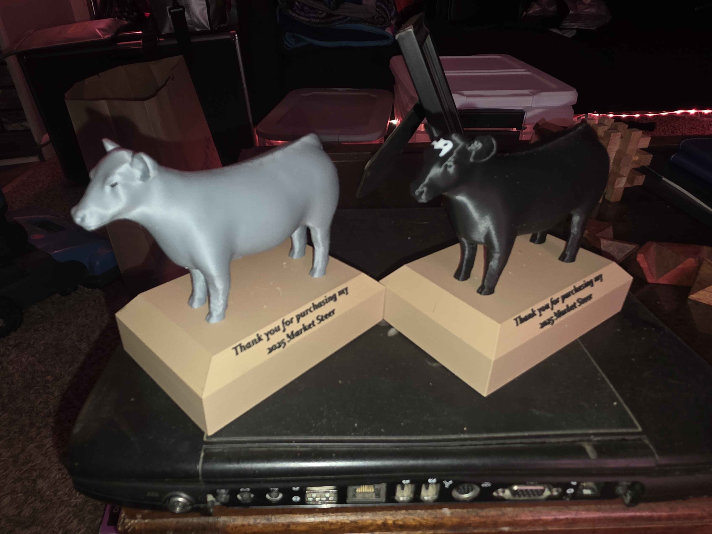
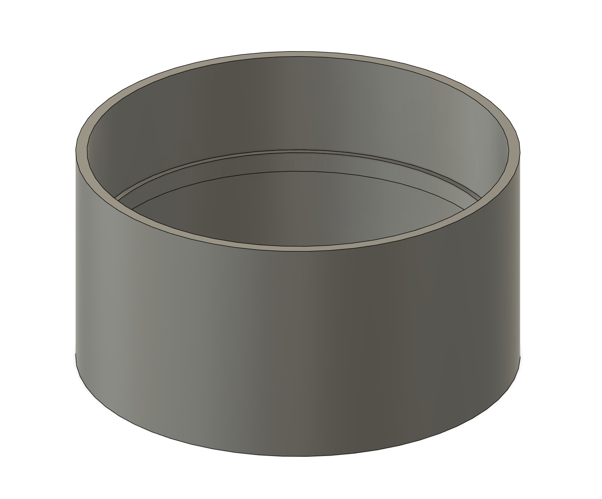
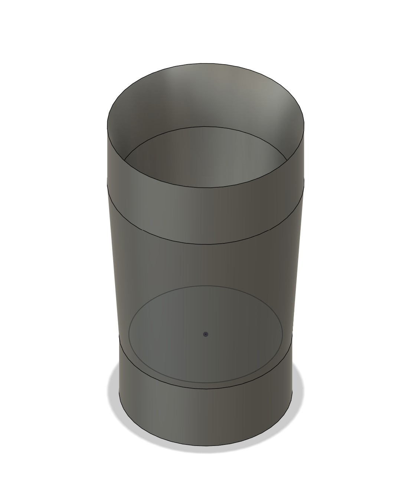

3D Printing & Fabrication
Practical parts, custom mounts, and physical pieces that support my vehicle, homelab, and everyday projects. Laser cutting work will be added here as it grows.
How This Section Is Organized
This page focuses on 3D-printed parts and, later, small-scale laser-cut projects. Each card below represents a part I've designed or printed, with photos and links where applicable.
Project assets are organized under:
/assets/printing/photos/ — pictures of finished parts and in-use shots
/assets/printing/files/ — project files, exports, or external links
3D Printed Projects
Show Steer Trophy
A custom show steer trophy piece, modeled and printed as a display item. This print can be commissioned and customized based on the show steer.

Humidifier Vent
A custom vent adapter for a humidifier setup, designed to route airflow horizontally where it’s needed. The model is complete, with printing and final photography pending.
Status: model ready, print and photos pending.
100 mm Coupler for Inline Air Vent
A 100 mm coupler designed to interface with inline air vents, allowing flexible ducting or additional components to be attached securely.
Designed as a functional solution to an airflow and connection problem.

36 mm to 32 mm Vacuum–Sander Coupler
A reducer coupler that adapts a 36 mm vacuum hose down to a 32 mm handheld sander port, improving dust collection and compatibility.
A straightforward but useful adapter bridging mismatched tool sizes.

1990 Ford F350 Shift Knob
A custom shift knob modeled for a 1990 Ford F350, blending functional geometry with automotive aesthetics to refresh an older interior component.
Fractal Torrent Headphone Mount v1.0
A headphone mount designed for the Fractal Torrent PC case, providing a clean and dedicated place to store a headset directly on the case.
My Cults3D Portfolio
I publish a selection of my models publicly on Cults3D, including functional parts, adapters, mounts, and cleaned game-ripped models prepared for printing.
Laser Cutting & Engraving (Planned)
This section will expand to include laser-cut and engraved projects such as labels, panels, brackets, and decorative pieces that complement printed components.
Assets will follow the same structure as 3D printing projects for consistency.